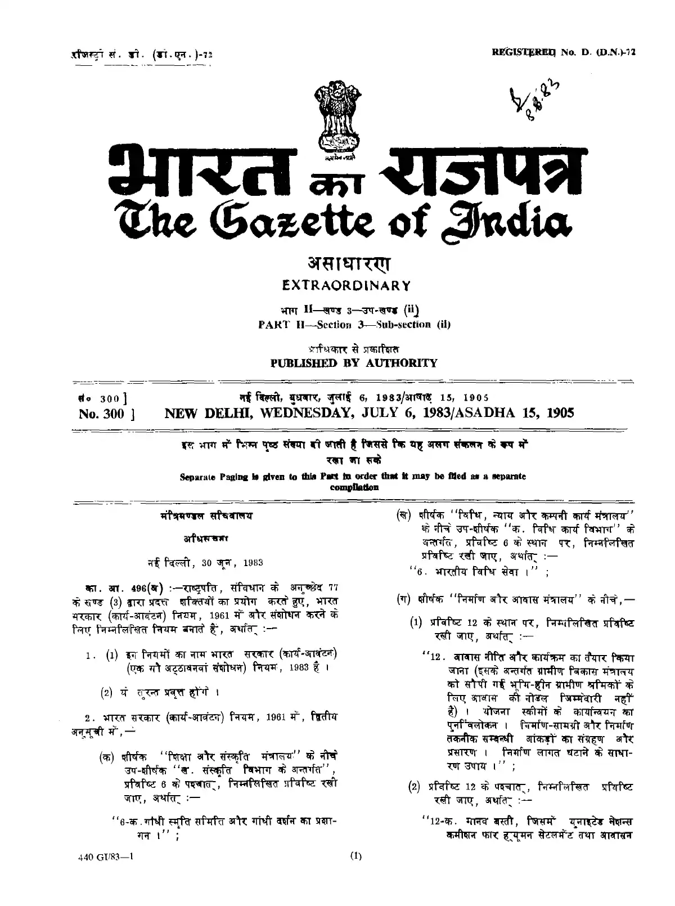
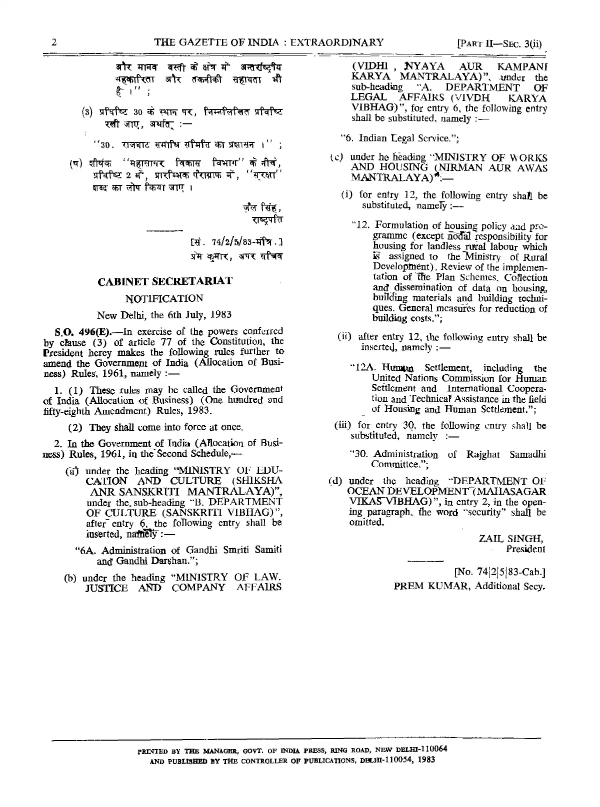

Amendment #158 (S.O. 496(E), 1983)
6 changes: 0 to the First Schedule, 6 to the Second Schedule. 6 applied
The order, page by page
Page 1 of 2

Page 2 of 2

123456after Schedule 2 › MINISTRY OF EDUCATION AND CULTURE › DEPARTMENT OF CULTURE › entry 6
- 6A. Administration of Gandhi Smriti Samiti and Gandhi Darshan.
applied at schedule 2 › ministry MINISTRY OF EDUCATION AND CULTURE (SHIKSHA AUR SANSKRITI MANTRA- LAYA) › department B › entry 6A in the Rules after #158
Schedule 2 › MINISTRY OF LAW. JUSTICE AND COMPANY AFFAIRS › DEPARTMENT OF LEGAL AFFAIRS › entry 6
- 6. Indian Legal Service.
applied at schedule 2 › ministry MINISTRY OF LAW. JUSTICE AND COMPANY AFFAIRS › department A › entry 6 in the Rules after #158
Schedule 2 › MINISTRY OF WORKS AND HOUSING › entry 12
- 12. Formulation of housing policy and programme (except nodal responsibility for housing for landless rural labour which is assigned to the Ministry of Rural Development). Review of the implementation of the Plan Schemes. Collection and dissemination of data on housing building materials and building…
applied at schedule 2 › ministry MINISTRY OF WORKS AND HOUSING › entry 12 in the Rules after #158
after Schedule 2 › MINISTRY OF WORKS AND HOUSING › entry 12
- 12A. Human Settlement, including the United Nations Commission for Humar Settlement and International Cooperation and Technical Assistance in the field of Housing and Human Settlement.
applied at schedule 2 › ministry MINISTRY OF WORKS AND HOUSING › entry 12A in the Rules after #158
Schedule 2 › MINISTRY OF WORKS AND HOUSING › entry 30
- 30. Administration of Rajghat Samadhi Committee.
applied at schedule 2 › ministry MINISTRY OF WORKS AND HOUSING › entry 30 in the Rules after #158
Schedule 2 › DEPARTMENT OF OCEAN DEVELOPMENT › entry 2
for “security” read “”
applied at schedule 2 › department DEPARTMENT OF OCEAN DEVELOPMENT › entry 2 in the Rules after #158
How this document was read
From the Government of India (Allocation of Business) Rules, 1961 and their amendments, as published by the Cabinet Secretariat (cabsec.gov.in), read by orgpedia. The readings of the older scanned gazettes have known gaps.